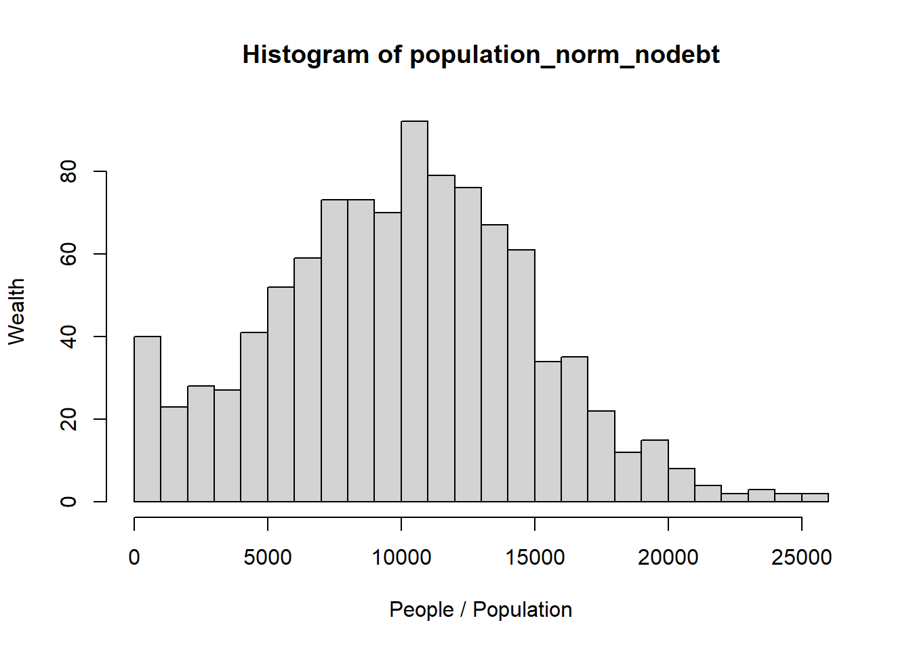

AI (a.k.a. chatGPT a.k.a. my Guy) was used in the generation of every morsel of code in this assignment.
Start with a random Sample of 1000 “people” whose wealth is normally distributed. The mean is 10’000 francs and the standard deviation is 5’000:
Code
# Set parameters for the normal distributionmean_wealth<-10000# Mean of 10,000 francssd_wealth<-5000# Standard deviation of 5,000 francsn_people<-1000# Sample size of 1000 people#generating a random samplepopulation_norm_nodebt<-rnorm(n_people, mean =mean_wealth, sd =sd_wealth)# Replace negative values with zero, there are negative values cuz mean/sd=2population_norm_nodebt<-ifelse(population_norm_nodebt<0, 0, population_norm_nodebt)#draw histogramhist(population_norm_nodebt, xlab ="People / Population", ylab ="Wealth", breaks =25)

Gini Coefficient of the calculated sample:
Code
gini<-function(y){# Sort the populationy<-sort(y)# Get the number of people in the populationn<-length(y)# Compute the numeratornumer<-2*sum((1:n)*y)# Compute the denominatordenom<-n*sum(y)# Return the Gini coefficientreturn((numer/denom)-(n+1)/n)}gini(population_norm_nodebt)
[1] 0.2748665
Defining what happens when two agents meet. In time, there may be multiple options here.
The first option is a random split, where the wealth is combined and then randomly distributed between the two agents.
Code
random_split<-function(wealth_a, wealth_b){# Total wealth in the potpot<-wealth_a+wealth_bshare_a<-runif(1, 0, pot)share_b<-pot-share_areturn(c(share_a, share_b))}
Now on to create a “meeting-function” that specifies which two agents meet. To start with, we assume that agents meet completely randomly.
Code
random_meeting<-function(n_people){#the function outputs two randomly sampled people from 1:Nreturn(sample(1:n_people, 2))}
With both the meeting function and the money distribution function done, I’ll now try to simulate the wealth distribution over time by making these functions run loads of times. The first function defines a step
Code
# Define the step functionstep<-function(population, transaction, interaction){# Select two actors using the interaction functionactors<-interaction(length(population))# Perform the transaction and update their wealthwealths<-transaction(population[actors[1]], population[actors[2]])# Update the population with the new wealth valuespopulation[actors[1]]<-wealths[1]# Update wealth for Actor 1population[actors[2]]<-wealths[2]# Update wealth for Actor 2return(population)# Return the updated population}# Define the simulate functionsimulate<-function(initial_population, T, step, transaction, interaction){history<-list()# Initialize a list to store the history of populationspopulation<-initial_population# Start with the initial population# Store the initial population in the historyhistory[[1]]<-populationfor(tin1:T){# Update populationpopulation<-step(population, transaction, interaction)# Store a COPY of the updated population in the historyhistory[[t+1]]<-population# Not just a reference}return(history)# Return the complete history of the simulation}
I’m checking whether the Gini Coefficient is bigger after a different number of steps (100, 500, 1000, 5000).
Code
for(Tinc(100, 500, 1000, 5000)){history<-simulate(initial_population =population_norm_nodebt, T =T, step =step, transaction =random_split, interaction =random_meeting)latest_population<-history[[length(history)]]gini_index_latest<-gini(latest_population)cat("Gini index after", T, "iterations:", gini_index_latest, "\n")}
Gini index after 100 iterations: 0.3095326
Gini index after 500 iterations: 0.3655959
Gini index after 1000 iterations: 0.4197269
Gini index after 5000 iterations: 0.4964971
It is. So far so good.
Now onto the meat & potatoes (go, chatGPT) - trying to show the change over time in the simulation.
Code
# Load necessary librarieslibrary(ggplot2)# Define a function to calculate the percentilespercent<-function(pct, items){# The item that is pct percent through the sorted list of itemsreturn(items[min(length(items), length(items)*pct/100)])}# Function to display statistics and plots after running the simulationshow<-function(population, k=40, percentiles=c(1, 10, 50, 90, 99), ...){N<-length(population)start<-population# Store results from simulationresults<-lapply(seq(0, k*N, by =N/10), function(t){pop<-sort(simulate(population, T =t, ...)[[t+1]])# simulate returns a listreturn(list(t =t, pop =pop))})# Printout:cat(sprintf("%7s %4s %5s", "t", "Gini", "stdev"), paste(sprintf("%3d%%", percentiles), collapse =" "), "\n")cat(paste(rep("-", 20+4*length(percentiles)), collapse =""), "\n")for(resinresults){pop<-res$popt<-res$tdata<-sapply(percentiles, function(pct)quantile(pop, pct/100))# Percentilescat(sprintf("%7d %4.2f %5.1f", t, gini(pop), sd(pop)), paste(sprintf("%4.0f", data), collapse =" "), "\n")}# Plotting the resultstimes<-sapply(results, `[[`, "t")wealth_data<-sapply(results, function(x)sort(x$pop))# Percentile plotsggplot(data.frame(wealth =unlist(wealth_data), time =rep(times, each =N)))+geom_line(aes(x =wealth, y =time))+labs(title =paste(percentiles, collapse ='/'), x ="Wealth", y ="Time")+theme_minimal()+theme(legend.position ="bottom")# Histogramspar(mfrow =c(1, 2))hist(start, main ="Start Population", xlab ="Wealth", col ="blue", breaks =30)hist(pop, main ="End Population", xlab ="Wealth", col ="red", breaks =30)# Ordered Curvesorder<-1:length(pop)plot(sort(start), order, type ='l', col ="blue", xlab ="Wealth", ylab ="Order", main ="Ordered Curves")lines(sort(pop), order, col ="red")legend("topleft", legend =c("Start", "End"), col =c("blue", "red"), lty =1)}show(population_norm_nodebt, k =5, step =step, transaction =random_split, interaction =random_meeting)
---title: "Assignment 2"author: "Noah De Bie"---::: {.callout-caution appearance="simple"}AI (a.k.a. chatGPT a.k.a. *my Guy*) was used in the generation of every morsel of code in this assignment.:::Start with a random Sample of 1000 "people" whose wealth is normally distributed. The mean is 10'000 francs and the standard deviation is 5'000:```{r}# Set parameters for the normal distributionmean_wealth <-10000# Mean of 10,000 francssd_wealth <-5000# Standard deviation of 5,000 francsn_people <-1000# Sample size of 1000 people#generating a random samplepopulation_norm_nodebt <-rnorm(n_people, mean = mean_wealth, sd = sd_wealth)# Replace negative values with zero, there are negative values cuz mean/sd=2population_norm_nodebt<-ifelse(population_norm_nodebt <0, 0, population_norm_nodebt)#draw histogramhist(population_norm_nodebt, xlab ="People / Population", ylab ="Wealth", breaks =25)```Gini Coefficient of the calculated sample:```{r}gini <-function(y) {# Sort the population y <-sort(y)# Get the number of people in the population n <-length(y)# Compute the numerator numer <-2*sum((1:n) * y)# Compute the denominator denom <- n *sum(y)# Return the Gini coefficientreturn((numer / denom) - (n +1) / n)}gini(population_norm_nodebt)```Defining what happens when two agents meet. In time, there may be multiple options here.The first option is a random split, where the wealth is combined and then randomly distributed between the two agents.```{r}random_split <-function(wealth_a, wealth_b) {# Total wealth in the pot pot <- wealth_a + wealth_b share_a <-runif(1, 0, pot) share_b <- pot - share_areturn(c(share_a, share_b))}```Now on to create a "meeting-function" that specifies which two agents meet. To start with, we assume that agents meet completely randomly.```{r}random_meeting <-function(n_people) {#the function outputs two randomly sampled people from 1:Nreturn(sample(1:n_people, 2))}```With both the meeting function and the money distribution function done, I'll now try to simulate the wealth distribution over time by making these functions run loads of times. The first function defines a step```{r}# Define the step functionstep <-function(population, transaction, interaction) {# Select two actors using the interaction function actors <-interaction(length(population))# Perform the transaction and update their wealth wealths <-transaction(population[actors[1]], population[actors[2]])# Update the population with the new wealth values population[actors[1]] <- wealths[1] # Update wealth for Actor 1 population[actors[2]] <- wealths[2] # Update wealth for Actor 2return(population) # Return the updated population}# Define the simulate functionsimulate <-function(initial_population, T, step, transaction, interaction) { history <-list() # Initialize a list to store the history of populations population <- initial_population # Start with the initial population# Store the initial population in the history history[[1]] <- populationfor (t in1:T) {# Update population population <-step(population, transaction, interaction) # Store a COPY of the updated population in the history history[[t +1]] <- population # Not just a reference }return(history) # Return the complete history of the simulation}```I'm checking whether the Gini Coefficient is bigger after a different number of steps (100, 500, 1000, 5000).```{r}for (T inc(100, 500, 1000, 5000)) { history <-simulate(initial_population = population_norm_nodebt, T = T, step = step, transaction = random_split, interaction = random_meeting) latest_population <- history[[length(history)]] gini_index_latest <-gini(latest_population)cat("Gini index after", T, "iterations:", gini_index_latest, "\n")}```It is. So far so good.Now onto the meat & potatoes (go, chatGPT) - trying to show the change over time in the simulation.```{r}# Load necessary librarieslibrary(ggplot2)# Define a function to calculate the percentilespercent <-function(pct, items) {# The item that is pct percent through the sorted list of itemsreturn(items[min(length(items), length(items) * pct /100)])}# Function to display statistics and plots after running the simulationshow <-function(population, k =40, percentiles =c(1, 10, 50, 90, 99), ...) { N <-length(population) start <- population# Store results from simulation results <-lapply(seq(0, k * N, by = N /10), function(t) { pop <-sort(simulate(population, T = t, ...)[[t +1]]) # simulate returns a listreturn(list(t = t, pop = pop)) })# Printout:cat(sprintf("%7s %4s %5s", "t", "Gini", "stdev"), paste(sprintf("%3d%%", percentiles), collapse =" "), "\n")cat(paste(rep("-", 20+4*length(percentiles)), collapse =""), "\n")for (res in results) { pop <- res$pop t <- res$t data <-sapply(percentiles, function(pct) quantile(pop, pct /100)) # Percentilescat(sprintf("%7d %4.2f %5.1f", t, gini(pop), sd(pop)), paste(sprintf("%4.0f", data), collapse =" "), "\n") }# Plotting the results times <-sapply(results, `[[`, "t") wealth_data <-sapply(results, function(x) sort(x$pop))# Percentile plotsggplot(data.frame(wealth =unlist(wealth_data), time =rep(times, each = N))) +geom_line(aes(x = wealth, y = time)) +labs(title =paste(percentiles, collapse ='/'), x ="Wealth", y ="Time") +theme_minimal() +theme(legend.position ="bottom")# Histogramspar(mfrow =c(1, 2))hist(start, main ="Start Population", xlab ="Wealth", col ="blue", breaks =30)hist(pop, main ="End Population", xlab ="Wealth", col ="red", breaks =30)# Ordered Curves order <-1:length(pop)plot(sort(start), order, type ='l', col ="blue", xlab ="Wealth", ylab ="Order", main ="Ordered Curves")lines(sort(pop), order, col ="red")legend("topleft", legend =c("Start", "End"), col =c("blue", "red"), lty =1)}show(population_norm_nodebt, k =5, step = step, transaction = random_split, interaction = random_meeting)```